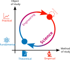

The central goal of deep learning research has always been to improve the performance of the deep learning algorithms used in real-world settings. However, this quest is a search in a high-dimensional space of architectures and hyperparameters, and guiding principles are sorely lacking. While valuable progress towards filling this gap has been made, theory still falls short of answering practically relevant questions like “will algorithm A or B perform better on task T?” or “what is the influence of hyperparameter H?” In the meantime, practitioners continue improving capabilities by feeling around in the dark, with no more precise understanding than alchemical lore (looking at you, “scaling is all you need”). As deep learning theory seems neither useful nor necessary in the current order of things, a popular view is that the search for guiding principles is a hopeless enterprise. In light of this situation, what should the aspiring scientist of deep learning do?
Here, I argue that this pessimism is shortsighted. The scientist’s path forward is to temporarily abandon aiming to improve performance and instead strive for fundamental understanding, pushing to develop a science of deep learning. Only then will this understanding enable principled engineering with potentially dramatic performance improvements through paradigm shifts or new applications previously thought out of reach. Aiming for understanding is playing the long game.
This path is illustrated below. In particular, I want to make the distinction between the method of study, which can be empirical or theoretical, and the object of study, which can be practical (a performance metric of interest) or fundamental (basic quantities derived from the loss landscape, the learned weights, the training data, and so on). Science places greater importance on the latter category. Even if the ultimate goal is to improve performance, it is beneficial to understand the behavior of fundamental quantities first. Besides, asking the right basic questions often leads to unforeseen practical applications. As an example, we didn’t arrive at nuclear power iteration on conventional power plants but rather through a very roundabout process that involved developing a theory of subatomic particles.

The rest of this essay develops this program in more detail. I make the case that understanding emerges when complementary points of view are connected. In particular, science builds understanding by connecting theory and experiments in a tight iterative loop. In the context of deep learning, this loop is a mode of research that has been so far underutilized and yet has high potential for progress.
The multiscale nature of understanding
What does it even mean to “understand”? To me, understanding is a multiscale notion: a concept or system can be understood at different levels of abstraction. These can be based on geometrical pictures, intuitive physics, analogies to simple solvable models, quantitative equations, algorithmic descriptions, numerical simulations, and so on. These different levels involve different parts of my brain and typically achieve different tradeoffs between precision and simplicity. Depending on the situation, one or the other may be preferred. But true understanding arises when as many levels as possible are connected to form a coherent description.
As a historical example, Newtonian gravity feels well understood because we can do all the following:
- we can visualize its effect with our brain’s internal physics engine;
- we can draw pictures of parabolic trajectories or elliptical orbits;
- we can write equations describing both gravitational fields and the trajectories they induce;
- we can solve them analytically in many special cases;
- and we can simulate them numerically with efficient approximate methods.
All these levels are consistent with each other: we can rely on each to make predictions, with different levels of quantitative precision and regimes of validity, that agree with experiments. Engineering enterprises, such as building rockets or skyscrapers, draw on all these levels of understanding.
What would such a multiscale understanding look like for deep learning? By analogy, here is a list of desiderata:
- We would like intuitive, one-sentence answers to questions such as what the key structural properties of the training data are, how deep learning exploits them, and how they are encoded in the weights.
- These answers should be accompanied by visual pictures that describe the dimensionality of the data and the learned parameters, and the geometry of the representations they give rise to.
- The learning process should be described by simple equations that characterize the evolution of a small number of key quantities, in a manner similar to how thermodynamics summarize gases with many particles into a few state variables such as temperature or entropy.
- These equations should be solvable at least in simplified settings that still capture the essential aspects of feature learning on natural data.
- Finally, this should result in new learning algorithms and network architectures that are more data and compute efficient, and approximate procedures that allow predicting final performance without simulating every neuron or observing all training samples.
The path to a science of deep learning
So how do we build fundamental understanding? Fortunately, over the course of more than two millennia, humanity has been developing and honing its most powerful tool for the job: the scientific method. It progresses by a constant dialogue between theory and experiments, and scientific understanding emerges when they are tightly connected. I think strengthening these connections is the main bottleneck in developing the science of deep learning: we lack experimentalists who know what theory looks like, as well as theorists who know what practice looks like. In this section, I give specific examples at this interface. In particular, I want to emphasize that the scientific method is much richer than the usual cursory description of formulating and validating hypotheses. There are many additional useful modes of scientific research, such as exploratory data analysis or identifying the “right” quantities to describe a system.
In order to inform theory, scientific experiments should aim to produce clear and precise statements. This requires them to be carefully controlled and designed with a specific goal in mind, such as:
- testing quantitative predictions outside the range of their assumptions (e.g., whether the NTK describes a finite-width network),
- making measurements to inform models (e.g., quantifying the intrinsic dimensionality of the data),
- discovering new empirical regularities (e.g., the loss scales predictably with compute),
- reporting surprising phenomena (e.g., image classifiers can fit random labels),
- distilling them to their simplest setting (e.g., double descent happens in random feature models),
- and eventually formulating conjectures (e.g., all loss basins are connected).
Analogously, in order to inform experiments, scientific theory should aim to provide actionable and broadly applicable guidance. This can be done by:
- making testable predictions (e.g., the standard parameterization is unstable at large width or depth),
- explaining observed phenomena with solvable analytical models (e.g., scaling laws of kernel ridge regression),
- identifying the important quantities to measure (e.g., the sharpness of the loss landscape),
- reducing the experimental search space (e.g., transferring optimal hyperparameters across widths),
- and eventually developing novel experimental tools (e.g., how to learn probabilistic models of data).
Conclusion
In summary, the goal of science is long-term impact: if performance improvement is a high-hanging fruit, fundamental understanding is our ladder, and we first need to build it. This solid understanding is complex and multilayered, with different levels of abstraction coming together as different rungs of the ladder. The scientific method, through a tight feedback loop between theory and experiments (the side rails of this ladder), is the engine for building this foundation. In the long run, developing a science of deep learning promises to replace today’s trial-and-error alchemy into principled engineering, leading to deep learning systems that are dramatically more powerful and efficient.
Citation
@article{guth-2026-longrunpayoff,
title = {Science plays the long game},
author = {Guth, Florentin},
journal = {Learning Mechanics},
url = {https://learningmechanics.pub/science-of-dl/long-run-payoff},
year = {2026}
}
Comments